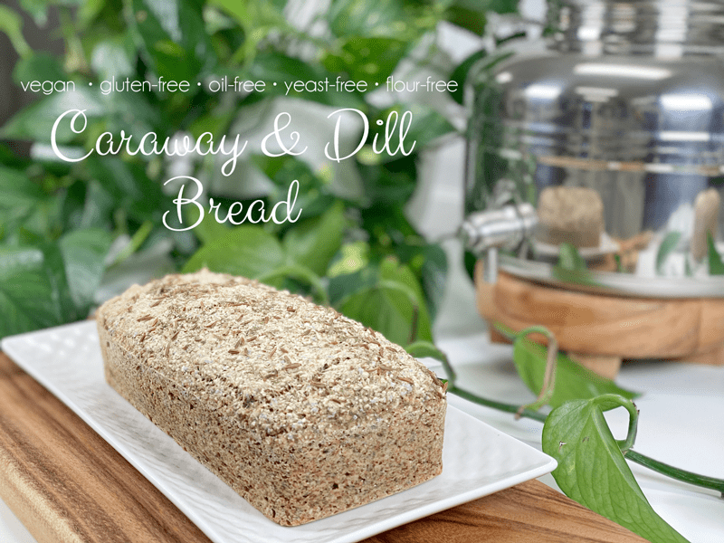
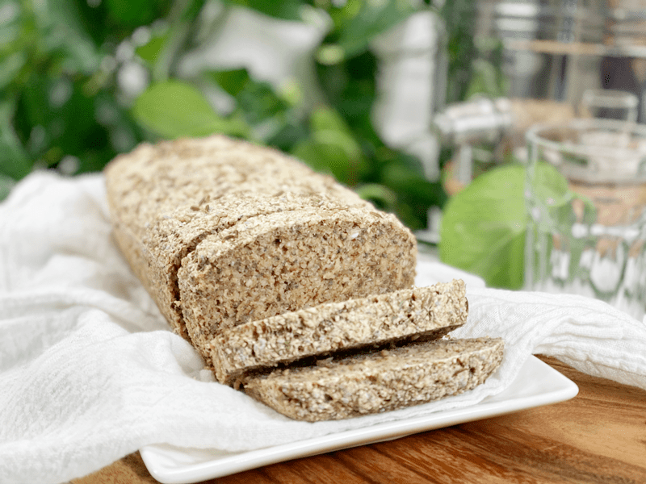
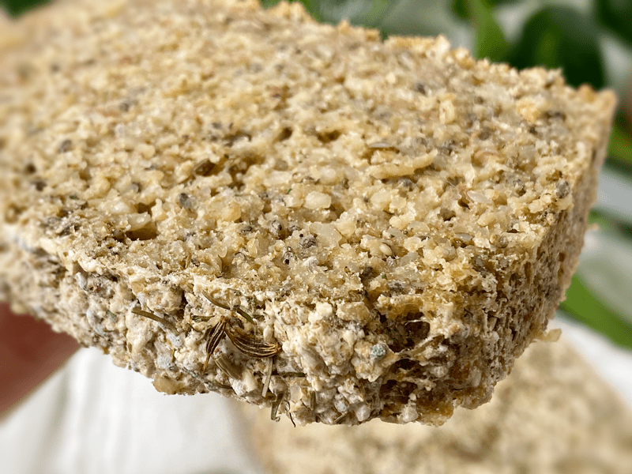

Caraway and Dill Oat Bread | Gluten-Free | Oil-Free | Flour-Free | Nut-Free
Did you know that it’s bread season? It starts today and continues for the next 364 days. I know exactly what you are thinking…you are so happy that I brought this to light so you don’t miss one day of this gluten-free, vegan holiday. I know, I am being silly, but when I have something to share with others, I can’t help being a little giddy–and yes, gluten-free, vegan, oil-free bread makes me giddy.

My dreamy way of enjoying this bread is to pop a slice into the toaster, place it on my plate once fully toasted, and top it with a large spoonful of freshly made sauerkraut, followed by a drizzle of mustard. I planned on photographing my creation, but my hunger got the best of me and before I knew it, one bite turned into the last and there wasn’t any evidence to be found. I work up an appetite in the kitchen!
If you are looking for other ideas on how to enjoy this bread, I have a few! Spread a thin layer of my raw Sweet and Spicy Mustard, followed by a thick slab of homemade vegan Swiss Cheese. Now this next combo sounds heavenly to me…create an open-faced sandwich with a hearty helping of my Thousand Island Cole Slaw Salad. I hope that I have tickled your taste buds by now!

As usual, I took an up-close and personal photo, trying to capture the texture of this bread for you. Allow me to tap into your imagination. This bread, despite its pale color, has a crusty exterior, which you can detect if you look closely at the following photo. The interior crumb is substantial, moist but not sticky, and offers some resilience when chewed. If this reads like poetry, then you are probably a closet foodie, baker, or sensory analyst who pays close attention to the texture of your food.
Flavor-wise, the caraway and dill linger from bite to bite. I concentrated on a faint complementary seasoning combination so that it could stand on its own or be paired with many other flavors. You can always adjust these flavors by adding more or less.

Ingredient Run-Down
Buckwheat
- Do not replace the whole buckwheat with buckwheat flour. The bread will become far too dense.
- When you go to the market you will find “raw” buckwheat (uncooked, pale tan color), kasha (cooked buckwheat, brown in color), whole groats, and broken groats. For this recipe, I am using raw WHOLE buckwheat groats.
- Buckwheat is high in magnesium, Vitamin B6, fiber, potassium, and iron. It is also a good source of copper, zinc, and manganese.
Gluten-Free Rolled Oats
- Just like the buckwheat, you will be using oats more in their whole form, rather than oat flour.
- I tried soaking the oats along with the buckwheat, but it resulted in a REALLY dense bread. If you wish to soak the oats to reduce the phytic acids and enzyme inhibitors, I recommend soaking it and dehydrating it before adding it to this recipe.
Chia Seeds
- Chia seeds are added as the primary binder in this bread. They are used in place of eggs.
- Chia seeds don’t need to be ground to a powder (unlike flax seeds).
Psyllium Husks
- Psyllium husks are added to give the bread the spongy texture that most of us are used to in commercially made bread. It’s one of the greatest characteristics of bread!
- Psyllium seed husks are one of nature’s most absorbent fibers–they can absorb over ten times their weight in water.
- As psyllium thickens when liquid is added, it is known to help get things moving in the digestion area. So, If you are eating recipes that contain these husks, please be sure to drink plenty of water throughout the day.
Baking Soda and Powder
- Be sure to use a reputable brand such as Bob’s Red Mill or Frontier. Arm & Hammer (and other similar brands) use a chemical process that turns trona ore into soda ash and then reacts carbon dioxide with the soda ash to produce baking soda. Bob’s Red Mill and Frontier procure their sodium bicarbonate directly from the ground, in its natural state.
- Look for a brand that is aluminum-free.
Well, that about sums it up. I hope that your kitchen will soon be filled with the lovely aroma of freshly baked Caraway and Dill Bread! blessings, amie sue
 Ingredients
Ingredients
Yields 1 (3 3/4″ x 8 3/4″) pan – roughly 12 slices
- 1 cup raw whole buckwheat kernels, soaked
- 1 1/2 cups gluten-free rolled oats, not soaked
- 1/4 cup chia seeds
- 1/4 cup psyllium husks (not powder)
- 1 Tbsp dried dill weed
- 2 tsp ground caraway seeds
- 1 tsp whole caraway seeds
- 1/4 cup unsweetened applesauce
- 1 1/2 cups water
- 1 tsp sea salt
- 1 tsp aluminum-free baking powder
- 1/2 tsp baking soda
Preparation
Soaking the Buckwheat
- Place the buckwheat in a glass or stainless steel bowl, and cover with double the amount of water.
- Add 2 Tbsp raw apple cider vinegar, stir, and cover with a clean dishtowel.
- Let it sit on the counter for 30 minutes to 4 hours.
- Once ready to use, drain and rinse before adding to the food processor.
Mixing and Baking
- Preheat oven to 350 degrees (F) and prepare your baking pan.
- I am baking the bread in silicone pans; therefore I don’t need any oil or parchment paper. One tip when using silicone baking dishes is to place them on a baking sheet before loading and transporting them to the oven. Since they are soft and flexible, they can be challenging to handle once full.
- If you use any other type of pan, I recommend lining with parchment paper so the bread doesn’t stick.
- Add the rolled oats, chia seeds, psyllium husks (not powder), caraway (whole and ground), dill, applesauce, water, and salt to the food processor (along with the buckwheat). Process for a full 30-60 seconds.
- Add the baking powder and baking soda, process 10 seconds, and immediately pour into the pan and bake for 1 hour.
- Before putting it into the oven, sprinkle extra caraway seeds and dill on top.
- Once done baking, remove the pan and slide the bread onto a cooling rack. Do not keep it in the pan, or it can become soggy.
- Cut once cooled, and enjoy!
Storage
- Once cooled, you can store it in an airtight container on the counter for a few days, or in the fridge for around 5 days.
- It also freezes fantastically well and toasts up beautifully. Slice it before freezing and pull out individual pieces as you need for an easy, nourishing breakfast or lunch.
© AmieSue.com